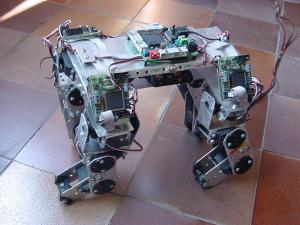

 | |||||||
|
Con esta página queremos dejar accesible toda la información del proyecto, para que pueda ser de ayuda a futuros creadores de robots. Lamentablemente hay muchas cosas que ya están obsoletas, la informática y la electrónica tienen esa peculiaridad, pero el planteamiento y muchas de las decisiones que se tomaron siguen siendo válidas.
Para tener una referencia en el tiempo, el robot se construyó durante el año 2000, en mi etapa de estudiante, en concreto fue mi Proyecto Fin de Carrera, presentado en Febrero del 2001. A partir de ahí ha participado en más de una conferencia, primero de la mano de Microbótica, y luego de forma independiente, por lo que a más de uno le puede resultar familiar. Como anécdota diremos que cuando se empezó a construir, Sony todavía no había lanzado el Aibo, justo cuando se terminó apareció su gran competidor. En fin, nos conformaremos con decir que el trabajo mereció la pena.
| DOCUMENTACIÓN | |
| indice.pdf (46KB) | Indice. Contenido del proyecto |
| capitulo1.pdf (228KB) | Capítulo 1. La evolución de la robótica |
| capitulo2.pdf (340KB) | Capítulo 2. Estructura mecónica |
| capitulo3.pdf (140KB) | Capítulo 3. Servomecanismos |
| capitulo4.pdf (186KB) | Capítulo 4. Electrónica de control |
| capitulo5.pdf (385KB) | Capítulo 5. Software de control |
| capitulo6.pdf (120KB) | Capítulo 6. Conclusiones y líneas futuras |
| apendiceA.pdf (171KB) | Apéndice A. Manual de usuario de la BT6811 |
| apendiceB.pdf (316KB) | Apéndice B. Manual de usuario de la CT6811 |
| puchobot-fin.ppt (1,4 MB) | Presentación PPT. Transparencias con la presentación del proyecto |
| puchobot.pdf (4MB) | Libro. Documento que contiene todos los anteriores excepto la presentación |
| Planos | |
| puchonew5.pdf (14KB) | Cuerpo. Planos del cuerpo del robot |
| puchonew6.pdf (8KB) | Lomo.Planos de la cubierta superior del cuerpo del robot |
| puchonew7.pdf(12KB) | Patas. Planos de las patas del robot |
| puchonew3.pdf (8KB) | Hombro. Planos de la articulación del hombro. |
| planos.zip(14KB) | Fuentes. Fuentes de los planos del robot en formato (.fig) para el programa XFIG |
| Software (Fuentes y Ejecutables) | |
| maestro.zip (3KB) | Maestro. Programa en ensamblador del 68hc11 para el control de la tarjeta maestra CT6811. |
| esclavo.zip (9,3KB) | Esclavo. Programa para las BT6811 (esclavas) que recibe órdenes por el SPI y controla 4 servos |
| control.zip(42,5KB) | Control. Programa para el PC (Linux) en Xforms que mueve el robot mediante unos cursores |
| xpucho.zip (76,4KB) | Xpucho. Programa para el PC (Linux) en Xforms que permite generar las secuencias de movimiento del robot. |
| Fotos | |
| botonera.gif (27,1KB) | XPUCHO. Pantallazo del programa de control Xpucho. Realizado en Xforms para Linux. |
| cuerpo-3.jpg (40KB) | Cuerpo. Foto del cuerpo del robot sin la cubierta |
| montado-1.jpg(60KB) | Control. Foto del cuerpo del robot sin la cubiera en posición levantado |
| pata-4.jpg (48,2KB) | Pata. Foto de una de las articulaciones compuesta por tres servos. |
| tumbado.gif(151KB) | PuchoBot. Robot Pucho tumbado a la espera de algún evento divertido |
| puchoifara.jpg (82KB) | PuchoBot. Pucho sin cabeza es vigilado por una de nuestras cámaras en Ifara. |
| IEA ROBOTICS | Página de inicio | Dirección de contacto |
{kind=link}
{kind=link}
{kind=link}
{kind=link}
{kind=link}
{kind=link}
{kind=link}
{kind=link}